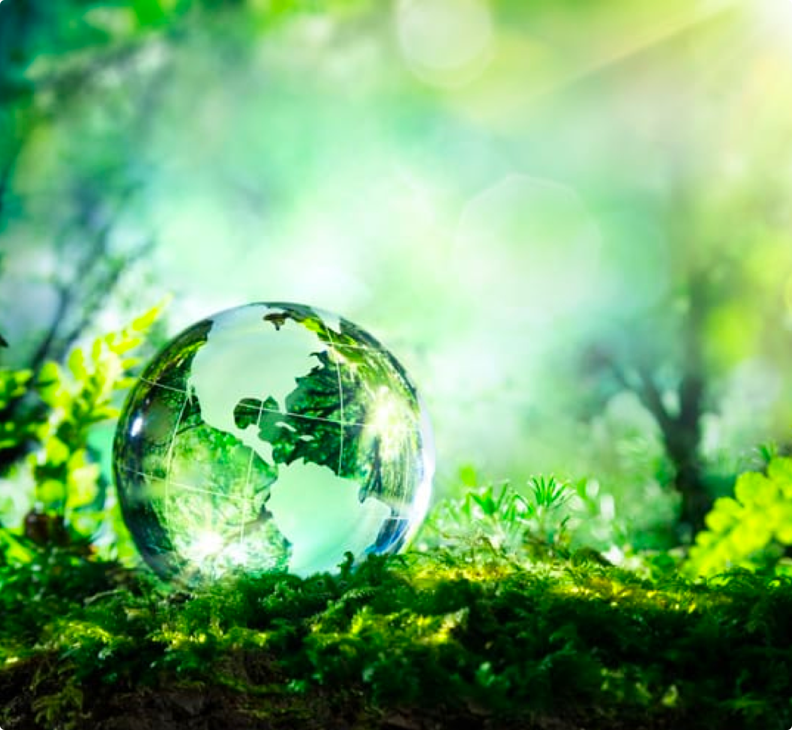

Help the world
become a greener place.
Passion. Collaborate. Team works


Passion. Collaborate. Team works
We've also been very fortunate to establish strategic partnerships in places like Buffalo and New York City which have been instrumental to our success. This would never be possible without them.
Today we're working on 16 different environment related projects around the state of New York and are actively looking for more people to join our team.
We're a lot more than a group of environmentalists. We're a team of volunteers that is committed to helping the environment and the communities around us.
Our main focus has always been the Wicker Park, this park is not located in Buffalo, but most of our team members has a strong connection with this park. Most of us have lived in Buffalo all our lives, and we feel very strongly about preserving our city's environment.
Because the Wicker Park is located in the middle of the city, there aren't that many
species. However, it's very important that we protect the few that still inhibit among us. We work very hard
on feeding and shelter to different bird and duck species.
Read more
Unfortunately, a lot of people don't respect public and green areas. But if none of
us take any action to prevent our living areas to become more and more polluted, we'll just live in a
dirty and unhealthy environment. We're also working on bringing awareness to different issues related to
the environment, and we've seen a clear improvement(in terms of pollution in our parks) over the past
years.
Read more
We have a team of volunteers in Central Manhattan, which is currently assisting a
partner of ours at the Central Park. They are focused on educating and motivating youngsters, from the age
of 12 to 18, to help the community and preserve our environments.
Read more
We host a fundraising event. This is a great place to meet new people and it helps us bring awareness to our mission. This month our fundraising will be held at The Wicker Park in Buffalo, NY.
Date: 13th of every month
One of the main reasons we've been able to grow our community to over 50 volunteers is due to organization culture. We believe that in order to have a strong team, we need to enjoy our time outside of our volunteering activity as well. This year our team is going fishing. We're looking forward to it.
Date: 19th of every month
We're always looking to improve our activities and interaction with our communities. So at the end of September our team is going back to Buffalo and we'll be hosting a strategy meeting to improve our project at Central Park
Date: 27th of every month